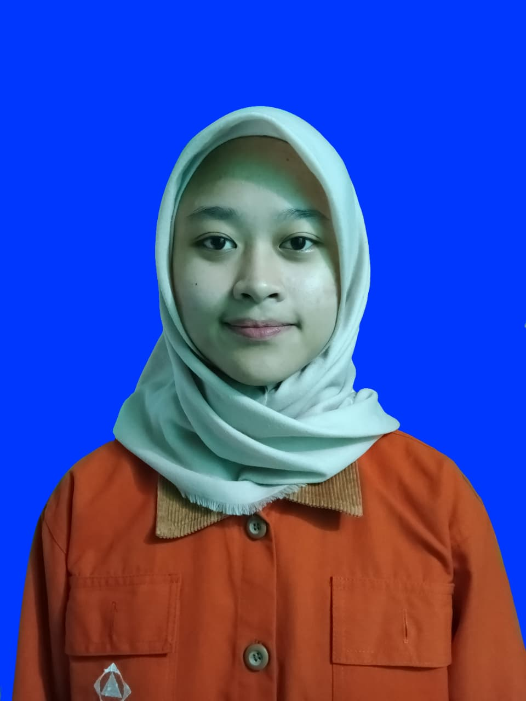

Reisya Putri Ramadhani
Mahasiswi Informatika — ITENAS
NRP: 152025112
Profil Singkat
Mahasiswi program studi Informatika di Institut Teknologi Nasional (ITENAS) yang memiliki minat besar dalam kemajuan teknologi dan pengolahan data. Memiliki pengalaman dalam mengelola data registrasi pengunjung, menjalin komunikasi profesional dengan dosen dan alumni, serta memberikan pelayanan informasi yang responsif kepada pihak-pihak terkait. Memiliki ketelitian tinggi serta dapat bekerja sama dengan baik dalam tim.
Kontak
Email: putrireisya051006@gmail.com
No. HP / WhatsApp: 089523939967
Alamat: Jl. Inhoftank no. 35, Bandung
Pendidikan
S1 Informatika — Institut Teknologi Nasional (ITENAS)
2025 - Sekarang
MIPA — SMA Pasundan 1 Bandung
2025
Pengalaman Kerja & Organisasi
Panitia KPU HMIF (Bagian Administrasi)
13 November 2025 – 13 Februari 2026
- Mengelola alur komunikasi kepada Alumni, Dosen, dan pihak-pihak terkait.
- Membagikan surat-surat fisik dan digital kepada pihak-pihak terkait.
Panitia Open Campus ITENAS (Bagian Registrasi)
9 Desember 2025 – 14 Desember 2025
- Bertanggung jawab untuk mendata setiap pengunjung yang datang ke acara Open Campus.
- Memberikan informasi singkat mengenai gambaran kasar tentang alur acara Open Campus.
LO (Liaison Officer) Wisudawan
1 Oktober 2025 – 23 November 2025
- Memberikan informasi tentang persiapan dari sebelum wisuda hingga acara After Party.
- Mendampingi serta mengarahkan keluarga wisudawan ke tempat yang harus dituju.
Freelance Digital Content Localizer
26 Juli 2025 – 31 Oktober 2025
- Melakukan pembersihan elemen teks asli (Image Cleaning).
- Menggambar ulang latar belakang yang terhapus saat pembersihan teks (Redrawing).
- Mengelola tipografi dan estetika visual dengan menyesuaikan pemilihan font (Typesetting).
- Melakukan penataan letak teks (Layouting) agar teks lebih nyaman dibaca.
Keahlian
Hard Skills:
Microsoft Excel
Google Sheets
Pascal
Python
Adobe Photoshop
Clip Studio Paint
Ibis Paint
Soft Skills:
Komunikasi Profesional
Kerja Sama Tim
Ketelitian Tinggi